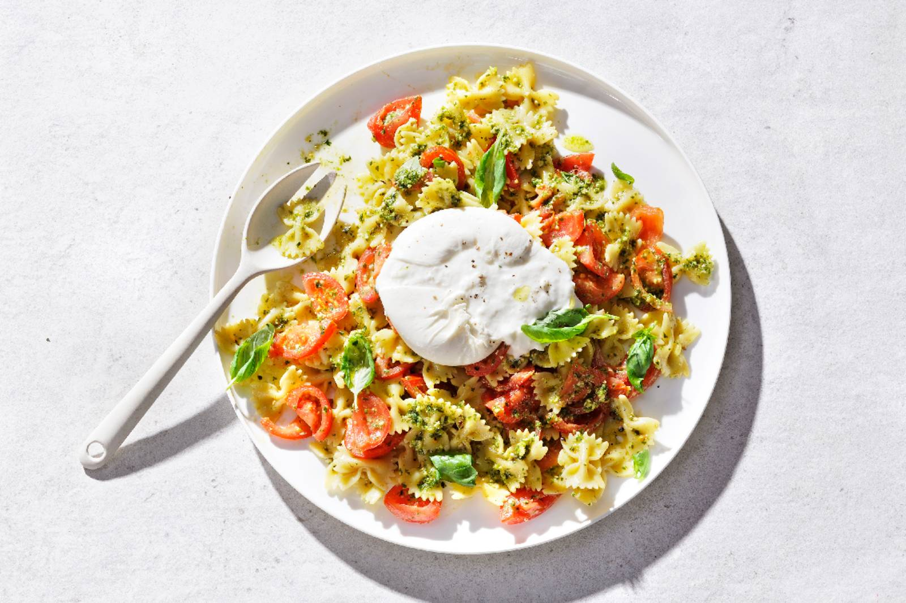

Pesto met burrata

Ingredienten
- 300 g farfalle
- 760 g Tasty Tom trostomaat
- 100 g verse groene pesto
- 15 g verse basilicum
- 150 g burrata
- 2 el extra vierge olijfolie
Bereiding
- Kook de farfalle volgens de aanwijzingen op de verpakking. Halveer de tastytomtrostomaten en snijd in plakken van 1/2 cm
- Giet de pasta af en schep de rauwe tomaten door de nog warme pasta. Schep ook de groene pesto erdoor en breng op smaak met peper en zout. Verdeel de salade over een grote schaal. Scheur de basilicum in stukjes en schep de helft erdoor.
- Leg de burrata in het midden en breek een beetje open. Bestrooi met de rest van het basilicum, besprenkel met de olijfolie en bestrooi met wat versgemalen zwarte peper.